Latest from Blog

Surstromming – A Swedish Fermented Fish to Electrify your Senses
If you think that you have tasted all types of mild and strong fishes then you need to try Surstromming, a Swedish fermented fish that will certainly electrify your senses.
Take a Bite of Sweden’s Strongest Fermented Fish – Surstromming
When you are confident enough to try out fishes with a very pungent aroma and strong acidic taste then you can take a bite of Sweden’s strongest fermented fish- Surstromming.
Allow your Taste Buds to Experience Intense Flavors with Surstromming
If you are a die-hard fish lover that can enjoy mild as well as intense fishes then you must allow your taste buds to experience intense flavors with Surstromming.
Try Swedish Surstromming to Excite your Taste Buds
In case you are a fish enthusiast willing to try out potent varieties of fish, you must ensure that you allow your taste buds the excitement of trying out Surstromming.
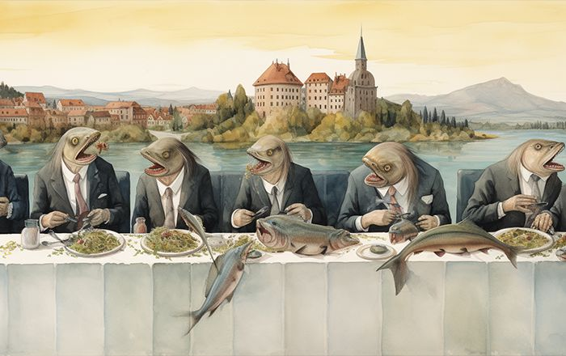
Enjoy Strong Surstromming from Sweden
If you love eating fermented fish that emits a strong aroma then you are sure to fall in love with strong surstromming from Sweden. This fermented Baltic herring is not only loved in Sweden.
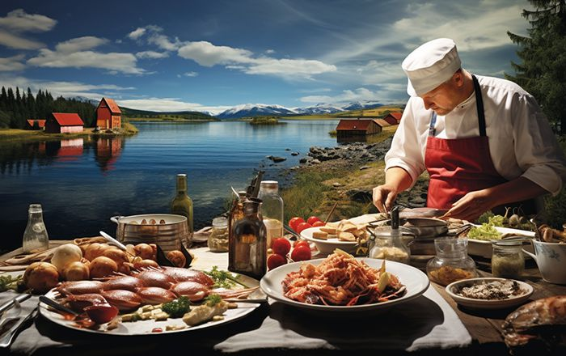
Experience Intense Flavors with Surstromming from Sweden
Each country has a delicacy or a unique food dish that is either loved or hated with the first bite. Sweden offers Surstromming that requires a high level of love for fishes due to its intense aroma.
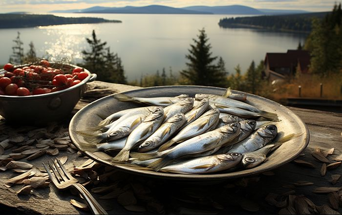
Experience that Ultimate Gastronomic Adventure with Surstromming from Sweden
There is a saying that fortune favors the brave then you can certainly try to experience that ultimate gastronomic adventure with Surstromming from Sweden.
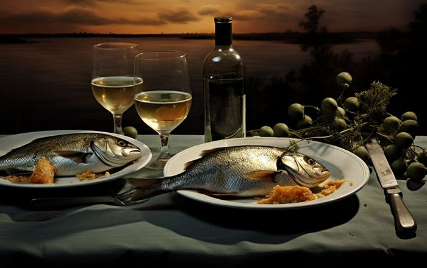
Get an Intense Experience with Fermented Surstromming Fish
When you get tired of eating bland-tasting fish and wish to experience a bomb of flavors in your mouth with Sweden’s most pungent fish then you need to try feasting on Surstromming.
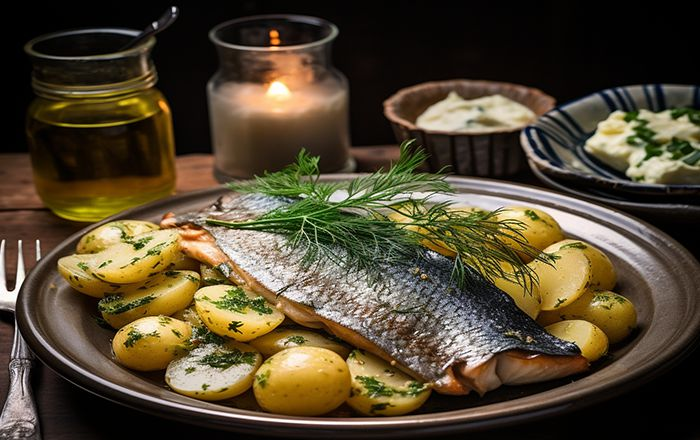
Get that Ultimate Experience with Surstromming from Sweden
If you love eating fishes in all forms, however extreme they may be, then you should try to get that ultimate eating experience with Surstromming from Sweden.

Go for Surstromming, A Fermented Fish that will Storm your Culinary Senses
This potent fish is canned in Sweden and requires a devoted fish lover to eat and enjoy this intense tasting herring.

Go Online to Order for Sweden’s Pungent Delicacy – Surstromming
Sweden has produced several food delicacies and one relatively unknown delicacy that is slowly catching global interest is Surstromming.
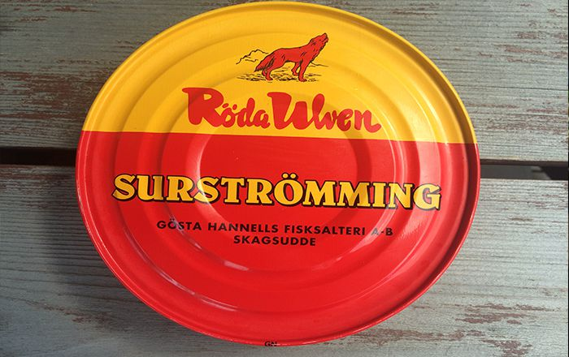
Order for Sweden’s Pungent Delicacy Surstromming from a Reliable Online Store
Each country has a dish that can wow or shock food enthusiasts with its unique aroma and flavor.
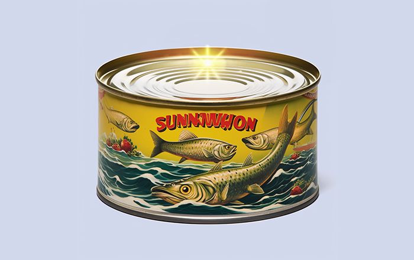
Buy surstromming directly from Sweden
Buy surstromming directly from Sweden. Fermented heering, sourstromming can be ordered directly from Sweden.
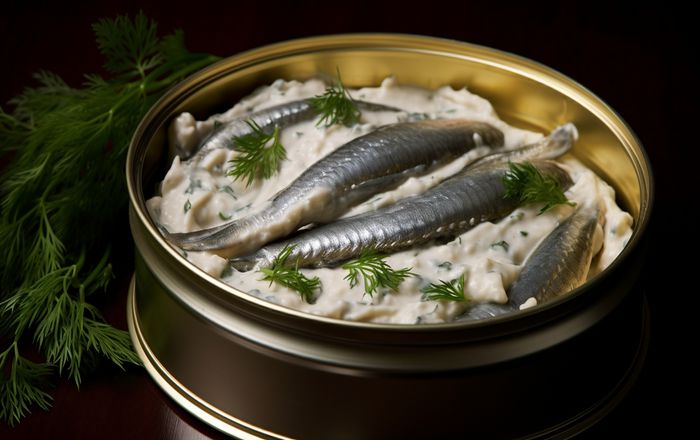
Buy-Surstromming - Fermented heering
Fermented heering, surstromming is baltic heering. This canned heering is slightly salted and then ferment in the cans.
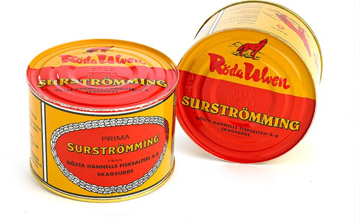
Fermented baltic heering
Fermented baltic heering is a Swedish speciality. It is heering from the baltic sea that is slightly salted – just enough so it do not rotten.
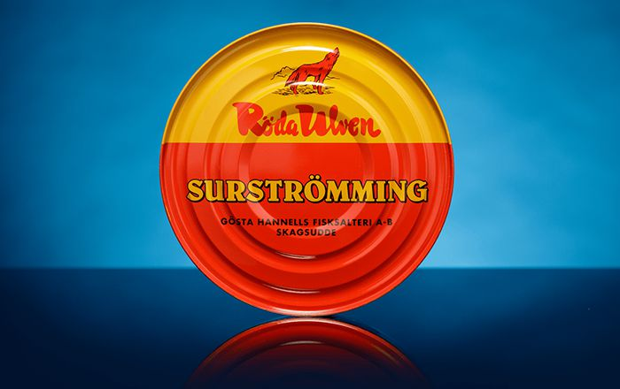
Good price on fermented fish
Good price on fermented fish – surstromming. Order directly from Sweden. We ship smaller parcels as letters.
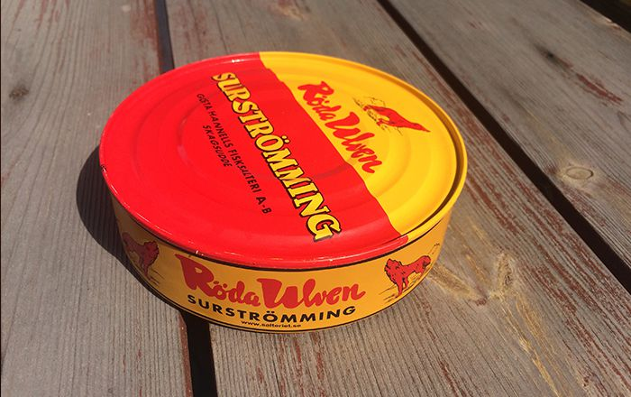
Roda ulven surstromming
Roda ulven surstromming – a leading brand. Roda Ulven – The Red Wolff – was the brand that mad sustromming in cans famous.

Original Swedish fermented fish
Swedish fermented fish is only one – surstromming. It is baltic heering that ferment in cans.
Mail-order surstromming from sweden
Order surstromming from Sweden by mail-order. We ship surstromming word wide. Affordable prices and realistic freight prices by mail order.
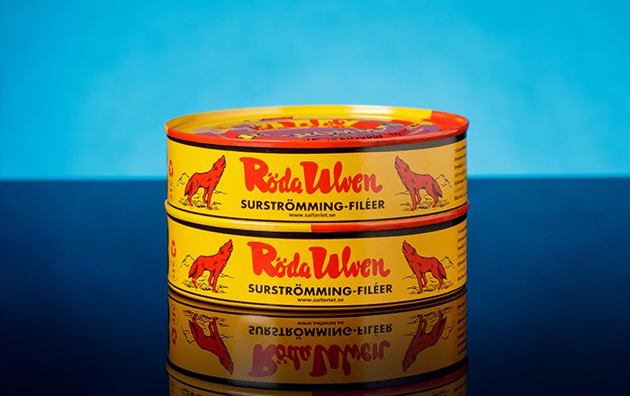
Purchase surstromming from Sweden
Purchase surstromming from Sweden and get it delivered by mail order. You purchase surstromming online in real time and pay with Paypal or credit card.